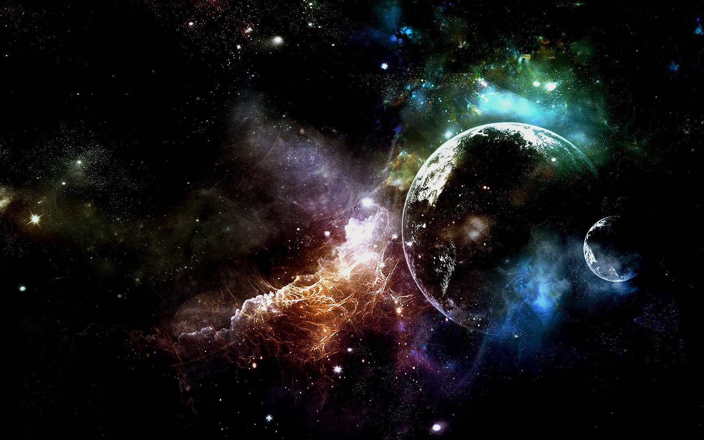

Every person, planet, stars and galaxy make up the Universe. It was formed 13.7 billion years ago. It was formed by a huge explosion called the Big Bang, the Big Bang’s creation of mass and energy to the Universe was so strong that the Universe is still expanding.
The Universe contains our Solar System. In our Solar System there is our own star the Sun and there are 8 planets Mercury, Venus, Earth, Mars, Jupiter, Saturn, Uranus, Neptune and also satellites it also contains our home the Earth.
The Universe also contains galaxies. The name of our galaxy is Milky Way, it contains 100 billion stars and also our Sun and it is 100 light years.
The Universe contains Black hole, it is a strong gravitational puller and swallowed up other stars and planets our black hole’s name is Sagittarius A*, it is millions of times bigger than the Sun .
There is also a event that can explode the Universe, many people think that it can’t be to make the Universe stop expanding but some cosmologist think it could be possible, they think it will shrink back to a event called the Big Crunch.
The Universe also contains stars, there are trillions of big stars in the Universe but we can see only 2,500 stars on a clear night sky appearing as tiny dots from Earth. The biggest star in the Universe is VY Canis Majoris. The biggest star in the Solar System is the Sun, the closest star to the Earth is Alpha Centauri. New stars are born in star nurseries-huge clouds of gas dust known as nebulae. Stars are born when the gases in a nebulae gradually gather together into spinning balls. They spin more and more quickly, until they get amazingly hot and a nuclear reaction, begins when this happens a baby star begins to glow. Stars are made of two gases hydrogen and helium. There is a event called when a really massive star dies it is called supernova. There are many types of stars including white dwarf, black dwarf, red giant and white giant. Old stars are called white dwarf, dead stars are called black dwarf, Rigel is a white giant, it is 20 times bigger than our Sun, Betelgeuse is a red giant, it 1,000 times bigger than our Sun. Sometimes stars make patterns they are called constellations etc. Orion (the hunter) is a hunter constellation named after a legendary Greek hunter other people also makes patterns as a game. The Universe also contains Pulsar stars, they are stars which can spin hundreds of times in just 1second.
There is a force in the Universe called gravity, it is one of the basic force like electromagnetism which is invented by a scientist named Isaac Newton.
In our daily life we use clock or watch to tell the time, but in the olden times like the Babylonians times they used the position of the Sun and the eclipse of the moon to tell the time and month. It is the thing that can’t stand still, but time maybe can stand still inside a black hole. Some people think that time travel possible but not as far as we know but if we could invent a machine which seemed to take us back in time it will probably take us to different Universe.
Some people think that there life to other planets, they think aliens must be exist. Seemed Universe is big and safe to us, but we have to take care of it esp. our Earth if we kept polluting the atmosphere in another 20th century it will just as like as it was born all living things will be dead.
